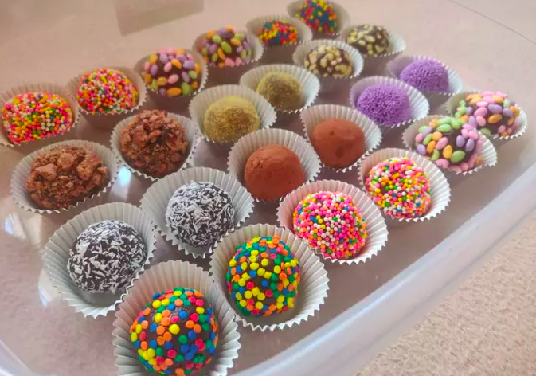

Brigadeiros Recipe

Description
Brigadeiro is a simple Brazilian chocolate bonbon, created in the 1940s and
named after Brigadier Eduardo Gomes, whose shape is reminiscent of that of
some varieties of chocolate truffles. It is a very popular candy in Brazil and in
Portugal and it is usually served at birthday parties,and also as dessert. The
candy is made by mixing sweetened condensed milk, butter and chocolate powder together.
The mixture is then heated in a pan on the stove or in a microwave oven to obtain a smooth,
sticky texture. It is usually rolled into balls which are covered in granulated chocolate;
that is the way brigadeiros are served at children's birthday parties. It can also be
consumed unrolled, with a spoon or used as a topping or filling for cakes, brownies and other
pastries. Beijinho is a variation that is often served together with brigadeiros at parties,
and is prepared with grated coconut instead of chocolate powder.
Ingredients:
- 1 can condensed milk
- 1 tbsp. unsalted butter, plus more for greasing
- 3 tbsp. unsweetened cocoa powder
- Sprinkles or chopped nuts, for rolling
- Cooking spray
Steps
- Combine the condensed milk, cocoa powder,
and 1 tbsp of butter in a medium saucepan.
Don’t worry if the butter doesn’t incorporate
well, it will once on the heat. Grease a plate
with extra butter, and set aside.
- Over a medium to low flame, heat the mixture
until thickened, about 8 to 10 minutes. Stir
continuously so it doesn't burn. It if starts
to bubble, turn down the heat.
- When it starts to unstick from the bottom of
the pan, pour the mixture onto your plate greased
with butter. Spread it out using an offset spatula
or the back of your spoon, and let sit until cool enough to handle.
- Spray a mini muffin tin with cooking spray. Add chocolate sprinkles onto
a plate or shallow bowl. Slightly grease your hands with butter. Spoon
about 1 tablespoon of mixture and roll into a ball between your hands.
(You can make these as big as you want, though about 3/4" in diameters traditional).
Roll the balls in the chocolate sprinkles to cover and place in the muffin tins.
Refrigerate until thoroughly chilled, about 90 minutes.